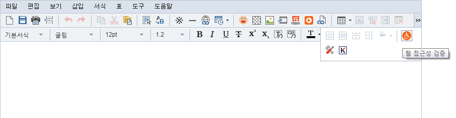

웹 접근성 검증
총 5가지의 웹 접근성 검증 항목을 제공 하고 있습니다.
웹 접근성 검증 항목은 Table의 Caption과 Summary, Image의 Alt, Iframe의 Title, A의 링크 Title, ID 중복 체크를
검증 합니다.
1. Table 태그
Table(표) 태그는 Caption(표 제목) 과 Summary(표 설명)의 위반 여부를 검증 합니다.

01표 삽입 후 웹 접근성 검증 아이콘을 클릭 합니다.
02표의 제목과 설명이 누락 되었을 경우 웹 접근성 위반 목록에 나타납니다.
03표의 제목과 설명을 입력 한 후 확인을 클릭, 웹 접근성을 준수 하면 체크 표시가 나타납니다.
2. Image 태그
Image태그는 Alt 값의 위반 여부를 검증 합니다.
01이미지 삽입 후 웹 접근성 검증 아이콘을 클릭 합니다.
02이미지의 설명이 누락 되었을 경우 웹 접근성 위반 목록에 나타납니다.
03이미지의 설명을 입력 한 후 확인을 클릭, 웹 접근성을 준수 하면 체크 표시가 나타납니다.
3. Iframe 태그
Iframe태그는 Title 값의 위반 여부를 검증 합니다.
01아이프레임 삽입 후 웹 접근성 검증 아이콘을 클릭 합니다.
02아이프레임 제목이 누락 되었을 경우 웹 접근성 위반 목록에 나타납니다.
03아이프레임의 제목을 입력 한 후 확인을 클릭, 웹 접근성을 준수 하면 체크 표시가 나타납니다.
4. A 태그
A 태그는 Title 값의 위반 여부를 검증 합니다.
01링크 삽입 후 웹 접근성 검증 아이콘을 클릭 합니다.
02링크의 제목이 누락 되었을 경우 웹 접근성 위반 목록에 나타납니다.

03링크의 제목을 입력 한 후 확인을 클릭, 웹 접근성을 준수 하면 체크 표시가 나타납니다.
5. ID 중복 체크
ID 값을 중복 사용했는지 위반 여부를 검증 합니다.

01아이디 중복 체크 할 항목을 입력 후 웹 접근성 검증 아이콘을 클릭 합니다.
02아이디가 중복 되었을 경우 웹 접근성 위반 목록에 나타납니다.
03아이디 값을 변경 한 후 확인을 클릭, 웹 접근성을 준수 하면 체크 표시가 나타납니다.
미입력 설정
웹 접근성 검증 위반 항목 중 미입력 체크 하면 해당 태그는 위반 항목으로 검증되지 않습니다.